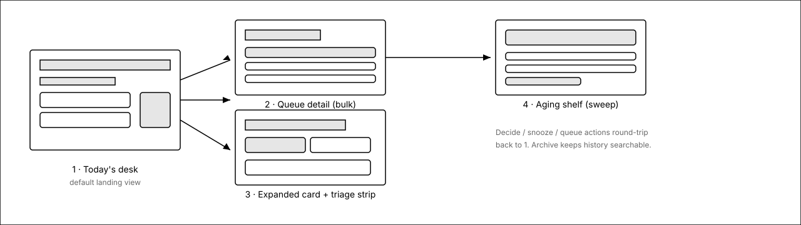
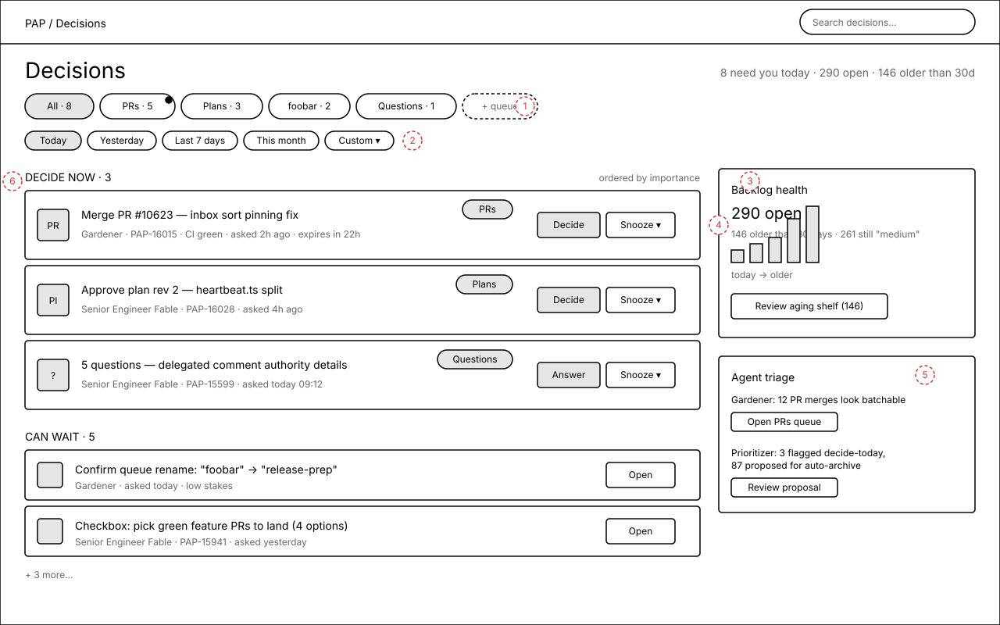
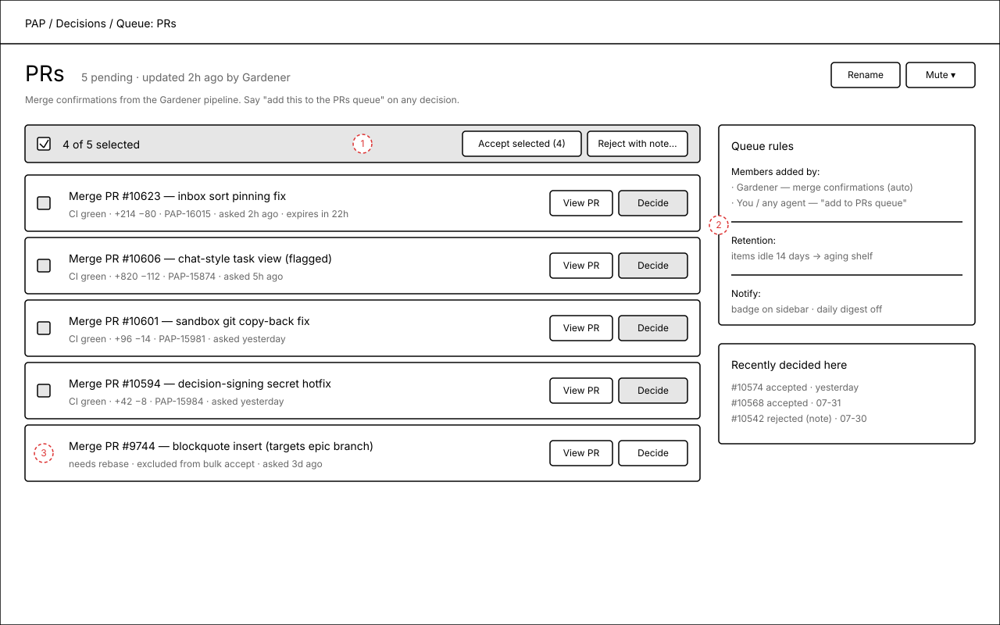
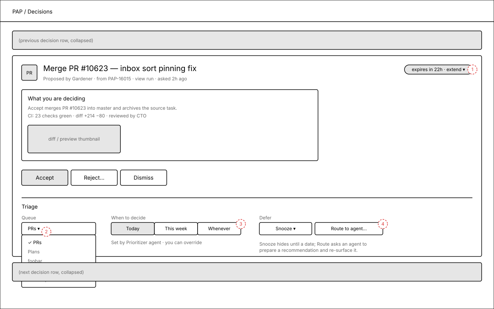
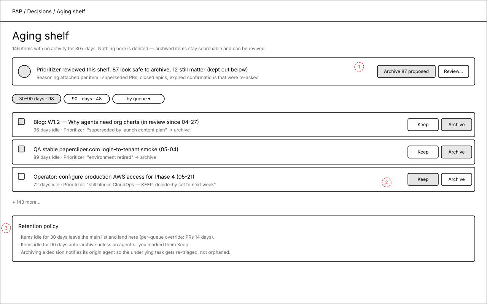

Decisions: grouping, queues, and a "today's desk"
The /PAP/decisions feed currently shows every pending decision for the whole company in one uncapped list. This proposal reshapes it around three ideas: queues (named, agent-fed groupings that become the quicklinks), date ranges (today / yesterday / last week / custom), and retirement (stale items leave the desk for an aging shelf instead of accumulating forever). Agents get first-class affordances to tag, prioritize, and propose archives.
What the data says
Measured against the live dev company on 2026-08-01 (the same data behind the screenshot in the task):
| Signal | Value | Implication |
|---|---|---|
| Open in-review items | 290 | Nobody can decide 290 things; the list is write-only. |
| Touched today / yesterday / this week | 8 / 12 / 24 | The real daily decision load is small — a "today's desk" is viable. |
| Idle > 30 days | 146 (oldest: April) | Retirement policy matters more than any sorting tweak. |
| Priority = "medium" | 261 of 290 | Priority as entered is dead as a ranking signal; importance must be assigned at decision time (by agents or the user). |
| Title-based clustering | 57% land in "other" | Type/queue must be first-class metadata, not title heuristics. |
The common threads in recent decisions
- Merge this PR — gardener / land-my-features confirmations, usually CI-green, batchable.
- Approve this plan revision — planning-mode confirmations bound to a plan document rev.
- Verify / accept QA result — sign-off confirmations after a QA pass.
- Answer questions — ask_user_questions forms blocking an agent's next step.
- Pick a subset — checkbox confirmations (e.g. "choose green PRs to merge").
rule_key, interaction kind, plan-document targets, PR work products) and extendable by telling any agent "add this to the foobar queue".Screen flow
Solid arrows = navigation. Every decide / snooze / queue action returns to the desk. Archive keeps history searchable.

1.Today's desk
The default landing view answers "what do I need to decide TODAY, in what order" — not "what exists". Two shelves (Decide now / Can wait) ordered by importance; everything older lives behind the date chips or the aging shelf.

Annotations
- 1 — Queue quicklinks, ordered by recently updated; dot = new activity since you last looked. "All" is the only fixed chip.
- 2 — Date-range chips filter on activity date; Custom opens a range picker. Today is the default.
- 3 — Backlog health: total, age histogram, and the entry point to the aging shelf — the accumulation is visible instead of silently mixed into the list.
- 4 — "Decide now" vs "Can wait" split comes from a per-item decide-by/importance field that agents (or you) set — not from the mostly-dead issue priority.
- 5 — Agent triage panel: agents that tag/prioritize surface their suggestions here as proposals, never silent mutations.
- 6 — Sections show counts; each row keeps kind icon, origin agent, source task, age, expiry, and queue pill.
2.Queue detail — "PRs"
A queue is a named, company-scoped list any agent or user can add decisions to ("add this to the PRs queue"). Queue pages support bulk decisions on homogeneous items and carry the queue's membership rules and retention override.

Annotations
- 1 — Bulk action bar: accept N selected homogeneous confirmations at once; reject requires a note that goes back to the origin agent.
- 2 — Queue rules card: who feeds the queue (automatic rules + manual adds), retention override, notification setting.
- 3 — Items that fail the batch invariant (needs rebase, targets a different branch) auto-deselect with a stated reason.
3.Expanded card with triage strip
Every decision card gains a triage strip: queue assignment, decide-by urgency, snooze, and route-to-agent. These are the affordances the "agents alongside" write to via API — and the user can always override.

Annotations
- 1 — Expiry becomes visible and actionable: countdown chip with one-click extend, instead of confirmations silently dying and getting re-minted.
- 2 — Queue picker (open state): move/add the decision to any queue or create one inline.
- 3 — "When to decide" segmented control = the importance signal that drives desk ordering; shows which agent set it.
- 4 — Route to agent: hand the decision to an agent to prepare a recommendation and re-surface it — the delegation affordance for "help me decide".
4.Aging shelf
Stale items leave the desk automatically and land here. An agent pre-reviews the shelf and proposes a bulk archive with per-item reasoning; archiving notifies the origin agent so the underlying task is re-triaged rather than orphaned. Nothing is deleted.

Annotations
- 1 — Agent proposal banner: one accept gesture retires 87 items, with per-item reasoning inspectable before accepting.
- 2 — Keep/Archive per row; Keep can set a decide-by date so the item re-enters the desk deliberately.
- 3 — The retention policy is written on the page — defaults (30d to shelf, 90d auto-archive) with per-queue overrides.
Open questions
- Badge semantics — should the sidebar badge become "decide-now count" (proposed) or stay total pending?
- Auto-archive consent — is 90-day auto-archive acceptable as a default, or should archiving always require accepting an agent proposal?
- Queue scope — company-wide queues (proposed, since decisions are company-scoped today) vs per-user queues?
- Seeded queues — proposed starter set: PRs (from merge confirmations / pull_request work products), Plans (plan-doc-bound confirmations), Questions (ask_user_questions). OK to seed these automatically?
- Mobile — desk and queue screens are desktop-first here; a phone pass (375×812) can follow once the desktop structure is agreed.